CM2 — Représentations du locuteur
Des i-vectors aux x-vectors, r-vectors et ECAPA-TDNN
2026-12-10
Objectifs du CM2
À la fin de la séance, vous devez pouvoir :
- expliquer pourquoi la reconnaissance du locuteur repose sur une représentation fixe d’un signal de durée variable ;
- décrire l’idée générale des i-vectors sans rentrer dans l’algorithme EM complet ;
- expliquer l’architecture x-vector : TDNN, pooling statistique, couches segment-level ;
- distinguer statistics pooling et attentive statistics pooling ;
- motiver les évolutions r-vector / ResNet et ECAPA-TDNN.
Où en sommes-nous ?
CM1
On a étudié le problème :
\[ (e,t) \longrightarrow s(e,t) \longrightarrow \delta_\tau(e,t). \]
Mais le score \(s(e,t)\) était une boîte noire.
CM2
On ouvre une partie de la boîte noire :
\[ x_{1:T} \longrightarrow z \in \mathbb R^d. \]
Le système transforme un signal de durée variable en une représentation fixe du locuteur.
Question
Qu’est-ce qu’une bonne représentation du locuteur ?
Elle doit être :
- stable pour un même locuteur malgré le canal, le bruit, la durée, le contenu linguistique ;
- discriminante entre locuteurs différents ;
- utilisable pour la vérification, l’identification et parfois la diarization.
Plan du CM2
- Motivation historique : de GMM-UBM à i-vector
- Le changement de paradigme : apprendre directement un embedding
- X-vector : TDNN, champ réceptif, statistics pooling
- R-vector : ResNet, attentive pooling et scoring cosinus
- ECAPA-TDNN : meilleure modélisation temporelle, attention de canal, agrégation multi-couches
- Transition vers CM3 : apprendre une géométrie discriminante
1. Motivation historique
Chronologie très synthétique
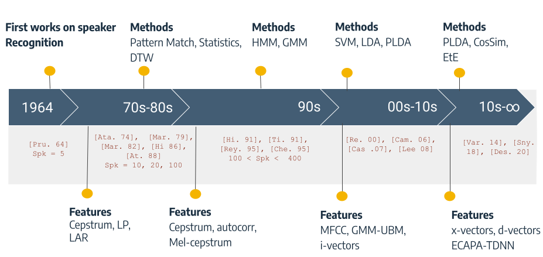
Message de cette chronologie
Avant les embeddings neuronaux
- features acoustiques : cepstrum, MFCC ;
- modèles probabilistes : HMM, GMM, GMM-UBM ;
- représentations statistiques : supervectors, i-vectors ;
- backends : LDA, PLDA.
Aujourd’hui
- embeddings appris par réseaux neuronaux ;
- architectures TDNN, ResNet, ECAPA ;
- losses discriminantes ;
- scoring souvent cosinus ou PLDA selon le système.
Où interviennent LDA et PLDA ?
Dans la chaîne historique, on ne se contente pas d’extraire un i-vector : on applique souvent un backend.
\[ \mathcal X \longrightarrow i^{(\mathcal X)} \longrightarrow \text{normalisation / LDA} \longrightarrow \text{PLDA score}. \]
LDA : transformation linéaire supervisée.
Objectif : rendre les locuteurs plus séparables.
PLDA : modèle probabiliste sur les embeddings.
Objectif : produire un score pour tester
\[ H_{\mathrm{tar}} \quad \text{vs} \quad H_{\mathrm{non}}. \]
LDA : pourquoi une projection supervisée ?
Supposons que l’on ait déjà des représentations fixes d’utterances.
On note
\[ z_{k,j}\in\mathbb R^d \]
l’embedding du \(j\)-ième utterance du locuteur \(k\).
PCA cherche les directions de grande variance globale.
Mais une grande variance n’est pas forcément une bonne séparation entre locuteurs.
LDA utilise les labels de locuteur.
Elle cherche des directions où les locuteurs sont bien séparés et où chaque locuteur reste compact.
LDA en deux classes : projection 1D
Pour comprendre l’idée, considérons deux locuteurs.
On projette les embeddings sur un vecteur unitaire \(v\) :
\[ a_{k,j}=v^\top z_{k,j}\in\mathbb R. \]
Après projection, on veut :
- des moyennes de classes éloignées ;
- des variances intra-classe faibles.
Pour deux classes, un critère naturel est :
\[ J(v)= \frac{\left(\mu_1(v)-\mu_2(v)\right)^2} {s_1^2(v)+s_2^2(v)}. \]
LDA : matrices de dispersion
On généralise maintenant à \(K\) locuteurs.
On note :
\[ \bar z_k = \frac{1}{n_k}\sum_{j=1}^{n_k} z_{k,j} \]
le centroïde du locuteur \(k\), où \(n_k\) est le nombre d’utterances disponibles pour ce locuteur.
On note aussi :
\[ \bar z = \frac{1}{N}\sum_{k=1}^{K}\sum_{j=1}^{n_k} z_{k,j}, \qquad N=\sum_{k=1}^{K}n_k. \]
LDA : intra vs inter-locuteur
La dispersion intra-locuteur est :
\[ S_w = \sum_{k=1}^{K}\sum_{j=1}^{n_k} (z_{k,j}-\bar z_k)(z_{k,j}-\bar z_k)^\top. \]
La dispersion inter-locuteur est :
\[ S_b = \sum_{k=1}^{K} n_k(\bar z_k-\bar z)(\bar z_k-\bar z)^\top. \]
\(S_w\) mesure la variabilité à l’intérieur d’un même locuteur.
\(S_b\) mesure la variabilité entre les centroïdes de locuteurs.
LDA : critère d’optimisation
Pour une projection 1D \(v\), on maximise le quotient de Rayleigh :
\[ J(v) = \frac{v^\top S_b v}{v^\top S_w v}. \]
Si \(S_w\) est inversible, les directions discriminantes sont obtenues via :
\[ S_b v = \lambda S_w v. \]
En pratique, LDA produit une matrice de projection \(W\) formée des principales directions discriminantes.
PLDA : pourquoi un backend probabiliste ?
Après LDA, les embeddings sont plus discriminants, mais ils contiennent toujours deux sources de variabilité :
\[ \boxed{ \text{identité du locuteur} + \text{variabilité intra-locuteur} } \]
PLDA propose de modéliser ces deux effets statistiquement afin de produire un score de vérification.
Question : si Alice prononce deux phrases différentes, que doit-on considérer comme commun aux deux embeddings ?
Réponse : une variable latente de locuteur partagée.
PLDA : modèle hiérarchique
On note \(z_{k,j}\in\mathbb R^d\) l’embedding du \(j\)-ième utterance du locuteur \(k\).
PLDA introduit une variable latente de locuteur :
\[ y_k \sim \mathcal N(\mu,\Phi_b), \]
où :
- \(\mu\) est la moyenne globale des embeddings ;
- \(\Phi_b\) est la covariance inter-locuteur (between-speaker) ;
- \(y_k\) représente la position latente du locuteur \(k\).
Conditionnellement à \(y_k\), chaque utterance du locuteur \(k\) est généré par :
\[ z_{k,j}\mid y_k \sim \mathcal N(y_k,\Phi_w), \]
où \(\Phi_w\) est la covariance intra-locuteur (within-speaker).
PLDA : écriture additive
On réécrit le facteur locuteur comme une fluctuation autour de la moyenne globale :
\[ y_k=\mu+\eta_k, \qquad \eta_k\sim\mathcal N(0,\Phi_b). \]
Puis l’embedding observé s’écrit :
\[ z_{k,j} = \mu+\eta_k+\varepsilon_{k,j}, \qquad \varepsilon_{k,j}\sim\mathcal N(0,\Phi_w). \]
PLDA : hypothèses probabilistes
Le calcul des covariances repose sur trois hypothèses explicites.
1. Locuteurs différents
\[ \eta_k \perp \eta_\ell \qquad\text{si }k\neq \ell. \]
Les facteurs de deux locuteurs différents sont indépendants.
2. Utterances distincts
\[ \varepsilon_{k,j}\perp\varepsilon_{\ell,r} \qquad \text{si }(k,j)\neq(\ell,r). \]
Les résidus d’utterances distincts sont indépendants.
3. Sources séparées
\[ \eta_k\perp\varepsilon_{\ell,j} \qquad \forall k,\ell,j. \]
La variabilité locuteur et la variabilité résiduelle sont indépendantes.
PLDA : le point subtil
Pour un même locuteur \(k\), les embeddings
\[ z_{k,1},z_{k,2},\ldots \]
partagent le même facteur latent \(\eta_k\) :
\[ \begin{aligned} z_{k,1} &= \mu+\eta_k+\varepsilon_{k,1},\\ z_{k,2} &= \mu+\eta_k+\varepsilon_{k,2}. \end{aligned} \]
Conditionnellement à \(\eta_k\), les utterances sont indépendants.
Mais marginalement, ils ne le sont pas, car ils partagent le même \(\eta_k\).
PLDA : covariance d’un embedding
Comme
\[ z_{k,j}-\mu = \eta_k+\varepsilon_{k,j}, \]
on obtient :
\[ \begin{aligned} \operatorname{Cov}(z_{k,j}) &= \mathbb E[(\eta_k+\varepsilon_{k,j})(\eta_k+\varepsilon_{k,j})^\top]\\ &= \mathbb E[\eta_k\eta_k^\top] + \mathbb E[\varepsilon_{k,j}\varepsilon_{k,j}^\top] \end{aligned} \]
car les termes croisés sont nuls par indépendance et centrage.
Donc :
\[ \boxed{ \operatorname{Cov}(z_{k,j})=\Phi_b+\Phi_w. } \]
PLDA : deux utterances du même locuteur
Pour deux utterances du même locuteur :
\[ z_{k,1}-\mu=\eta_k+\varepsilon_{k,1}, \qquad z_{k,2}-\mu=\eta_k+\varepsilon_{k,2}. \]
Alors :
\[ \begin{aligned} \operatorname{Cov}(z_{k,1},z_{k,2}) &= \mathbb E[(\eta_k+\varepsilon_{k,1})(\eta_k+\varepsilon_{k,2})^\top]\\ &= \underbrace{\mathbb E[\eta_k\eta_k^\top]}_{\Phi_b} + \underbrace{\mathbb E[\eta_k\varepsilon_{k,2}^\top]}_{0} + \underbrace{\mathbb E[\varepsilon_{k,1}\eta_k^\top]}_{0} + \underbrace{\mathbb E[\varepsilon_{k,1}\varepsilon_{k,2}^\top]}_{0}. \end{aligned} \]
Donc :
\[ \boxed{ \operatorname{Cov}(z_{k,1},z_{k,2})=\Phi_b. } \]
PLDA : deux locuteurs différents
Pour deux locuteurs différents \(k\neq \ell\) :
\[ z_{k,1}-\mu=\eta_k+\varepsilon_{k,1}, \qquad z_{\ell,1}-\mu=\eta_\ell+\varepsilon_{\ell,1}. \]
Cette fois :
\[ \eta_k\perp\eta_\ell. \]
Tous les termes croisés sont donc nuls, y compris
\[ \mathbb E[\eta_k\eta_\ell^\top]=0. \]
Ainsi :
\[ \boxed{ \operatorname{Cov}(z_{k,1},z_{\ell,1})=0. } \]
PLDA : l’intuition du score
PLDA compare deux structures probabilistes.
Même locuteur
Les deux embeddings partagent le même facteur latent :
\[ \operatorname{Cov}(z_1,z_2)=\Phi_b. \]
Locuteurs différents
Les facteurs latents sont indépendants :
\[ \operatorname{Cov}(z_1,z_2)=0. \]
PLDA ne compare donc pas seulement deux points par une distance : il demande si leur dépendance statistique est compatible avec un même facteur latent de locuteur.
PLDA : matrices sous les deux hypothèses
En regroupant deux embeddings dans un vecteur joint :
\[ \begin{bmatrix}z_1\\z_2\end{bmatrix}, \]
on obtient sous l’hypothèse target :
\[ H_{\mathrm{tar}}: \quad \begin{bmatrix}z_1\\z_2\end{bmatrix} \sim \mathcal N \left( \begin{bmatrix}\mu\\\mu\end{bmatrix}, \begin{bmatrix} \Phi_b+\Phi_w & \Phi_b\\ \Phi_b & \Phi_b+\Phi_w \end{bmatrix} \right). \]
Sous l’hypothèse non-target :
\[ H_{\mathrm{non}}: \quad \begin{bmatrix}z_1\\z_2\end{bmatrix} \sim \mathcal N \left( \begin{bmatrix}\mu\\\mu\end{bmatrix}, \begin{bmatrix} \Phi_b+\Phi_w & 0\\ 0 & \Phi_b+\Phi_w \end{bmatrix} \right). \]
PLDA : score de vérification
Pour une paire d’embeddings \((z_e,z_t)\), PLDA compare :
\[ H_{\mathrm{tar}}: \text{$z_e$ et $z_t$ partagent le même facteur latent de locuteur}, \]
\[ H_{\mathrm{non}}: \text{$z_e$ et $z_t$ ont deux facteurs latents indépendants}. \]
Le score PLDA est un log-rapport de vraisemblance :
\[ s_{\mathrm{PLDA}}(z_e,z_t) = \log \frac{p(z_e,z_t\mid H_{\mathrm{tar}})} {p(z_e,z_t\mid H_{\mathrm{non}})}. \]
PLDA : forme factorielle classique
On rencontre aussi une paramétrisation factorielle :
\[ z_{k,j} = \mu+Fh_k+\varepsilon_{k,j}, \]
avec
\[ h_k\sim\mathcal N(0,I), \qquad \varepsilon_{k,j}\sim\mathcal N(0,\Sigma). \]
Dans ce cas :
\[ \Phi_b = FF^\top, \qquad \Phi_w=\Sigma. \]
Ce que l’on garde pour la suite
Chaîne historique forte
\[ \text{i-vector} + \text{LDA/PLDA}. \]
On extrait une représentation statistique puis on applique un backend probabiliste.
Transition moderne
\[ \text{DNN} \longrightarrow \text{embedding discriminant}. \]
Le réseau apprend directement une géométrie favorable au scoring.
Rappel : représentation de durée fixe
Un enregistrement de parole n’est pas une seule observation : c’est une séquence temporelle.
Après découpage en petites fenêtres, on obtient
\[ \mathcal X = \{x_t\}_{t=1}^{T}, \qquad x_t\in \mathbb R^F. \]
Concrètement, \(x_t\) peut être par exemple :
- un vecteur de MFCC calculé sur une fenêtre de 25 ms ;
- un vecteur log-mel filterbank ;
- un vecteur avec dérivées \(\Delta,\Delta\Delta\) ;
- plus généralement, une description acoustique courte autour du temps \(t\).
Avant l’i-vector : un UBM fixe
Dans la chaîne i-vector classique, on entraîne d’abord un GMM-UBM sur un grand corpus de développement.
\[ p(x) = \sum_{c=1}^{C} \pi_c\,\mathcal N(x;\mu_c,\Sigma_c). \]
Une fois cet UBM appris, ses paramètres sont fixes :
\[ \boxed{\pi_c,\;\mu_c,\;\Sigma_c\quad\text{sont fixés pendant l'extraction i-vector}.} \]
Ici :
- \(c\in\{1,\ldots,C\}\) indexe une composante gaussienne ;
- \(\mu_c\in\mathbb R^F\) est la moyenne de cette composante ;
- une composante gaussienne n’est pas un locuteur : c’est une région acoustique du modèle UBM.
Un utterance vu par l’UBM
Pour un nouvel utterance
\[ \mathcal X=\{x_t\}_{t=1}^{T}, \]
on ne réentraîne pas le GMM. On utilise l’UBM fixe pour calculer, pour chaque frame \(x_t\), la responsabilité :
\[ \gamma_{t,c} = P(c\mid x_t) = \frac{\pi_c\mathcal N(x_t;\mu_c,\Sigma_c)} {\sum_{j=1}^{C}\pi_j\mathcal N(x_t;\mu_j,\Sigma_j)}. \]
Interprétation : \(\gamma_{t,c}\) mesure à quel point la frame \(x_t\) est expliquée par la gaussienne \(c\) du UBM.
Statistiques suffisantes de l’utterance
À partir des responsabilités, on résume \(\mathcal X\) par des statistiques par composante :
\[ N_c^{(\mathcal X)} = \sum_{t=1}^{T}\gamma_{t,c}, \qquad F_c^{(\mathcal X)} = \sum_{t=1}^{T}\gamma_{t,c}x_t. \]
Souvent on utilise aussi la statistique centrée :
\[ \widetilde F_c^{(\mathcal X)} = \sum_{t=1}^{T}\gamma_{t,c}(x_t-\mu_c). \]
Lecture :
- \(N_c^{(\mathcal X)}\) : combien l’utterance occupe la composante \(c\) ;
- \(F_c^{(\mathcal X)}\) : somme pondérée des observations associées à \(c\) ;
- \(\widetilde F_c^{(\mathcal X)}\) : écart de l’utterance par rapport au UBM.
Du UBM au supervecteur latent
Le supervecteur moyen du UBM est fixe :
\[ \mu = \begin{bmatrix} \mu_1^\top & \cdots & \mu_C^\top \end{bmatrix}^\top \in\mathbb R^{CF}. \]
Pour un utterance \(\mathcal X\), le modèle de variabilité totale suppose un supervecteur latent :
\[ \mathcal M^{(\mathcal X)} = \mu+\Phi h^{(\mathcal X)}+\epsilon. \]
On peut lire chaque bloc comme
\[ \mathcal M_c^{(\mathcal X)} = \mu_c+\Phi_c h^{(\mathcal X)}+\epsilon_c. \]
i-vector : ce que l’on extrait vraiment
Dans la pratique, on ne veut pas manipuler directement le très grand supervecteur \(\mathcal M^{(\mathcal X)}\in\mathbb R^{CF}\).
On infère plutôt le facteur latent de faible dimension :
\[ h^{(\mathcal X)}\in\mathbb R^d, \qquad d\ll CF. \]
L’i-vector est typiquement la moyenne a posteriori :
\[ \boxed{ i^{(\mathcal X)} = \mathbb E\left[h^{(\mathcal X)}\mid \mathcal X\right] } \]
à partir des statistiques \(N_c^{(\mathcal X)}\) et \(F_c^{(\mathcal X)}\) calculées avec l’UBM.
Chaîne conceptuelle :
\[ \mathcal X \longrightarrow \gamma_{t,c} \longrightarrow (N_c,F_c) \longrightarrow h^{(\mathcal X)} \longrightarrow \text{i-vector}. \]
Visualisation du modèle i-vector
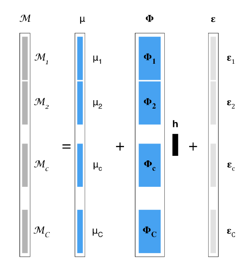
Tableau de synthèse des quantités
| Quantité | Rôle | Fixe ou dépend de \(\mathcal X\) ? |
|---|---|---|
| \(x_t\) | feature acoustique de la frame \(t\) | dépend de \(\mathcal X\) |
| \(\pi_c,\mu_c,\Sigma_c\) | paramètres de la gaussienne \(c\) du UBM | fixes après apprentissage |
| \(\gamma_{t,c}\) | responsabilité de \(c\) pour \(x_t\) | dépend de \(\mathcal X\) |
| \(N_c^{(\mathcal X)},F_c^{(\mathcal X)}\) | statistiques de Baum-Welch | dépendent de \(\mathcal X\) |
| \(\Phi\) | matrice de variabilité totale | fixe après apprentissage |
| \(h^{(\mathcal X)}\) | facteur latent | dépend de \(\mathcal X\) |
| \(i^{(\mathcal X)}\) | i-vector extrait | dépend de \(\mathcal X\) |
Ce que l’i-vector apporte
Problème initial
Un utterance est une séquence longue :
\[ \mathcal X = \{x_1,\ldots,x_T\}. \]
Difficile de comparer deux séquences directement.
Solution i-vector
On extrait une représentation compacte :
\[ i^{(\mathcal X)}\in\mathbb R^d. \]
Puis on peut comparer, normaliser, appliquer LDA/PLDA.
La machinerie i-vector
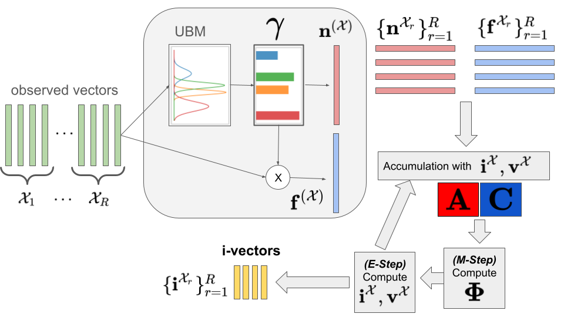
Cette figure résume la chaîne complète :
\[ \text{UBM fixe} \rightarrow \text{statistiques }(N_c,F_c) \rightarrow \text{inférence de }h \rightarrow \text{i-vector}. \]
Message pédagogique : l’i-vector est puissant, mais il nécessite UBM, statistiques d’ordre 0/1, modèle latent, EM, puis souvent un backend LDA/PLDA.
Transition vers les embeddings neuronaux
Peut-on apprendre directement la fonction
\[ \{x_t\}_{t=1}^{T} \longmapsto z \]
par apprentissage supervisé sur des locuteurs ?
C’est l’idée générale des x-vectors : entraîner un réseau à classifier les locuteurs du training set, puis utiliser une couche cachée comme embedding.
2. Paradigme x-vector
Recette moderne d’un extracteur speaker
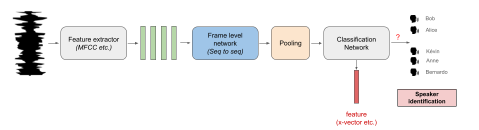
Le paradoxe utile
À l’entraînement
On résout un problème closed-set :
\[ p(y=k\mid \mathcal X), \qquad k\in\{1,\ldots,K\}. \]
Les locuteurs du training set sont connus.
Au test
On vérifie des locuteurs jamais vus :
\[ s(z_e,z_t). \]
L’embedding doit généraliser à de nouvelles identités.
Question
Pourquoi entraîner un classifieur de locuteurs peut-il produire une représentation utile pour des locuteurs jamais vus ?
Parce que la classification impose au réseau d’organiser l’espace latent selon des caractéristiques discriminantes du locuteur :
\[ \text{intra-speaker compact} \qquad\text{et}\qquad \text{inter-speaker séparé}. \]
Le classifieur final sera jeté ; on conserve l’embedding.
Définition opérationnelle d’un x-vector
Un x-vector est un embedding extrait d’une couche segment-level d’un réseau entraîné pour classifier les speakers.
Schéma abstrait :
\[ x_{1:T} \xrightarrow{\text{TDNN}} h_{1:T} \xrightarrow{\text{statistics pooling}} g \xrightarrow{\text{segment layers}} z \xrightarrow{\text{softmax}} y. \]
3. Le TDNN de l’x-vector
TDNN : champ réceptif local
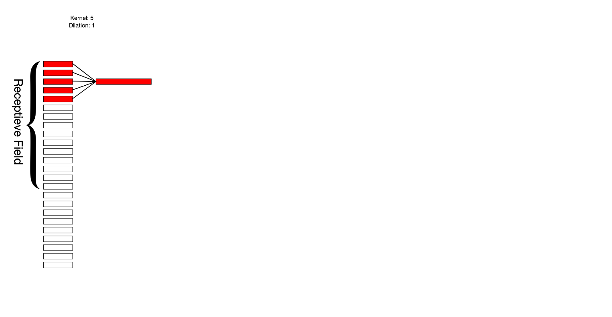
TDNN : accumulation du contexte
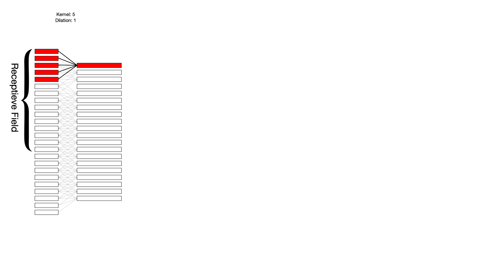
TDNN : dilation
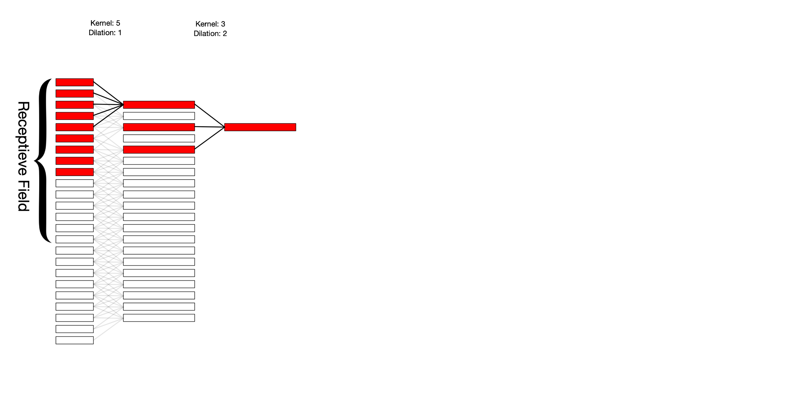
TDNN : contexte effectif
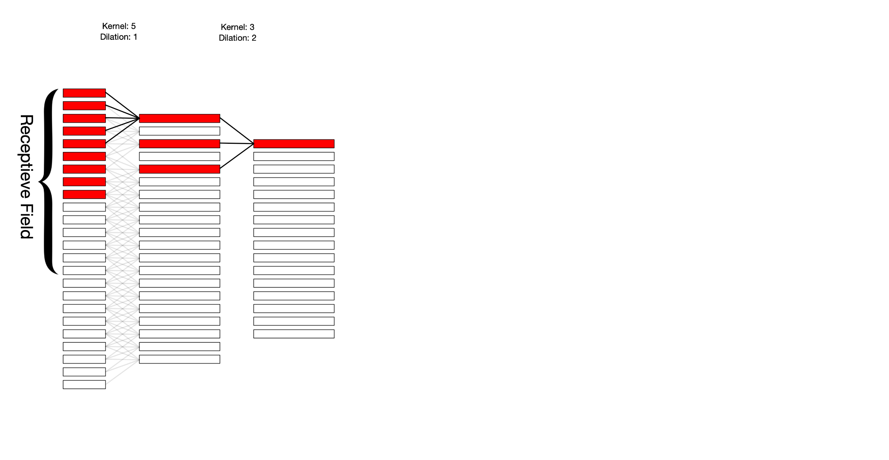
TDNN : troisième couche
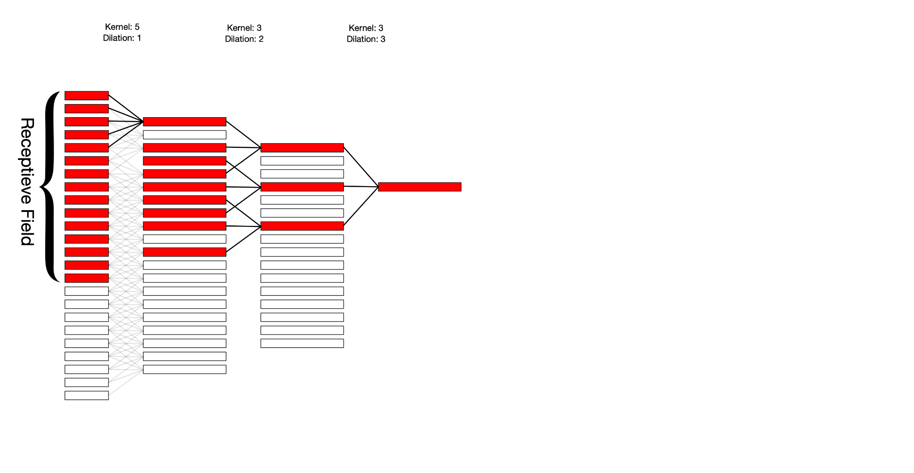
TDNN : champ réceptif après trois couches
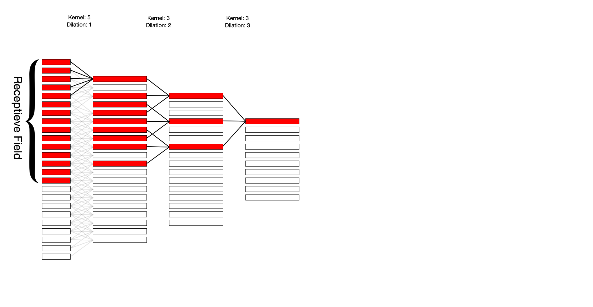
TDNN : couches à kernel 1
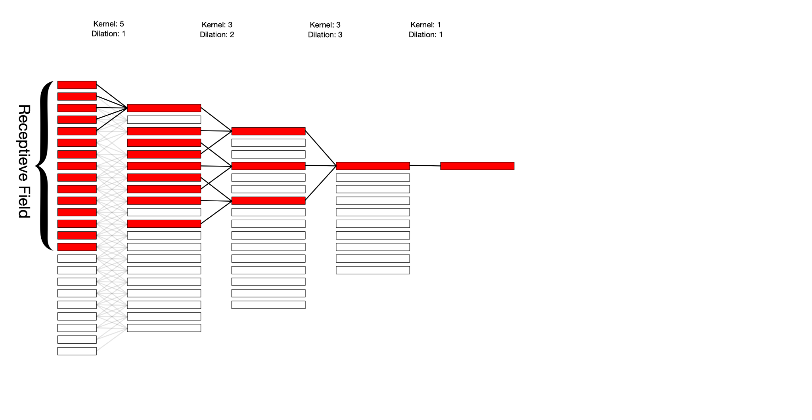
TDNN complet avant pooling
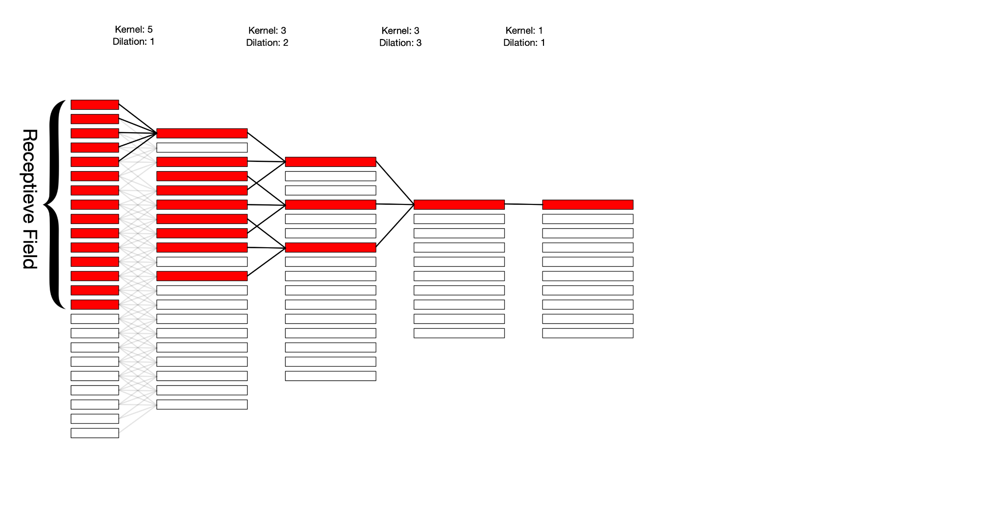
Le champ réceptif en formule
Pour une pile de convolutions 1D de kernel \(k_\ell\) et dilation \(d_\ell\), sans stride, le champ réceptif vérifie :
\[ R_L = 1+ \sum_{\ell=1}^{L}(k_\ell-1)d_\ell. \]
Pour les trois premières couches :
\[ R_3 = 1+(5-1)\cdot1+(3-1)\cdot2+(3-1)\cdot3 = 15. \]
Question
On possède maintenant une représentation pour chaque frame :
\[ x_1,\ldots,x_T. \]
Mais \(T\) varie selon l’utterance. Comment obtenir un seul vecteur fixe ?
On applique un pooling temporel sur toute la séquence.
Statistics pooling
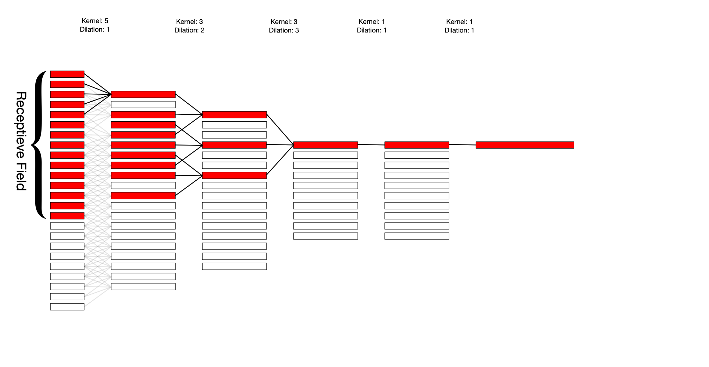
Mean and standard deviation pooling
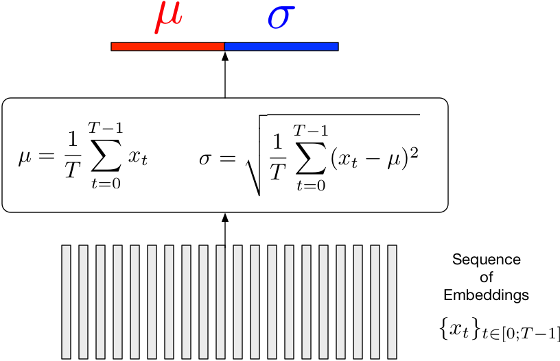
Statistics pooling : équations
Soit \(x_t\in\mathbb R^D\) la représentation frame-level. On calcule :
\[ \mu = \frac{1}{T}\sum_{t=1}^{T}x_t, \]
\[ \sigma = \sqrt{ \frac{1}{T}\sum_{t=1}^{T}(x_t-\mu)^{\odot 2} }. \]
Puis :
\[ g=[\mu,\sigma]\in\mathbb R^{2D}. \]
Pourquoi garder l’écart-type ?
Deux utterances peuvent-elles avoir la même moyenne temporelle mais une distribution d’activations différente ?
Oui. La moyenne décrit un centre ; l’écart-type donne une information sur la dispersion temporelle des activations.
\[ \text{mean only} \quad < \quad \text{mean + standard deviation}. \]
Après le pooling : couches segment-level
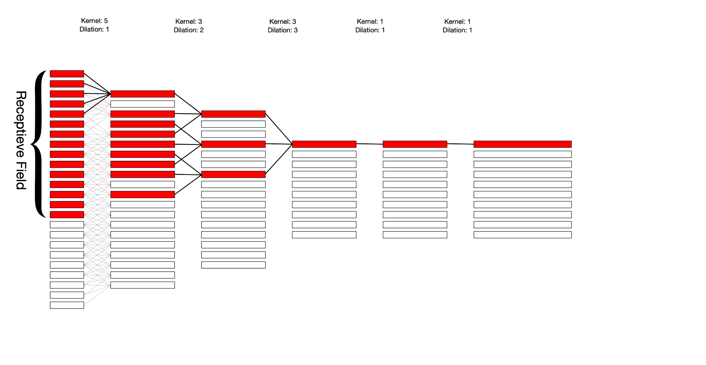
Extraction de l’x-vector
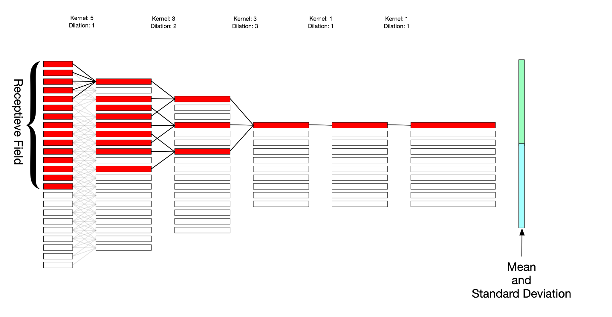
Classifieur speaker
Vue complète
Résumé visuel final
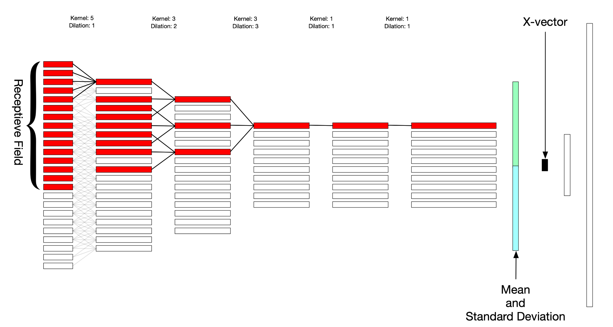
Architecture x-vector : lecture compacte
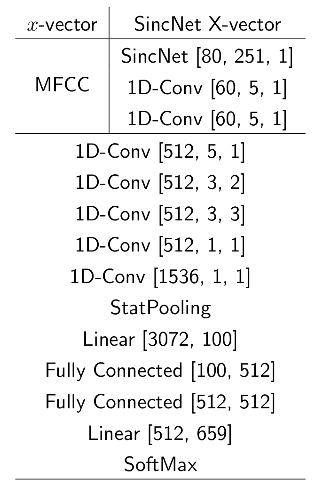
Parenthèse utile : SincNet
Dans les architectures x-vector classiques, l’entrée du réseau est souvent une séquence de features déjà extraites :
\[ x_t \in \mathbb{R}^{D}, \qquad t=1,\ldots,T. \]
Par exemple : MFCC, log-mel filterbanks, ou features similaires.
Question
Peut-on apprendre la première banque de filtres directement à partir du signal brut ?
\[ s[n] \longrightarrow \text{speaker network} \]
SincNet répond : oui, mais avec une forte contrainte acoustique sur la première couche.
Convolution 1D classique sur waveform
Soit \(s[n]\) un signal audio discret.
Une convolution 1D standard avec le filtre \(i\) de longueur \(L\) donne :
\[ y_i[n] = (s*h_i)[n] = \sum_{k=0}^{L-1} h_i[k]s[n-k]. \]
Les coefficients
\[ h_i[0],\ldots,h_i[L-1] \]
sont appris indépendamment.
Pour un filtre :
\[ \boxed{\text{Conv1D classique : }L\text{ paramètres appris}} \]
Exemple : si \(L=251\), alors il y a \(251\) paramètres par filtre.
SincNet : ne pas apprendre tous les coefficients
SincNet impose que la première couche soit une banque de filtres passe-bande.
Le filtre \(i\) n’est plus défini par \(L\) coefficients libres, mais par deux fréquences de coupure :
\[ f_{1,i},\qquad f_{2,i}, \qquad f_{2,i}>f_{1,i}. \]
Son impulsion est :
\[ g_i[n] = 2f_{2,i}\,\mathrm{sinc}(2\pi f_{2,i}n) - 2f_{1,i}\,\mathrm{sinc}(2\pi f_{1,i}n). \]
La sortie du filtre est ensuite :
\[ y_i[n]=(s*g_i)[n]. \]
\[ \boxed{\text{SincNet : }2\text{ paramètres principaux par filtre}} \]
au lieu de \(L\) coefficients libres.
Pourquoi cette contrainte est utile ?
Conv1D classique
- apprend \(L\) coefficients arbitraires ;
- très flexible ;
- les filtres peuvent être difficiles à interpréter ;
- le réseau doit découvrir seul la sélectivité fréquentielle.
SincNet
- apprend seulement \(f_1\) et \(f_2\) ;
- impose un biais audio fort ;
- chaque filtre correspond à une bande fréquentielle ;
- moins de paramètres dans la première couche.
Idée principale :
\[ \boxed{ \text{ne pas apprendre la forme du filtre depuis zéro ; apprendre où écouter.} } \]
SincNet : que veut dire \([80,251,1]\) ?
Supposons que le waveform contienne \(N\) échantillons :
\[ s[0],s[1],\ldots,s[N-1]. \]
La couche SincNet contient \(80\) filtres :
\[ g_1,\ldots,g_{80}. \]
Chaque filtre regarde localement \(251\) échantillons du signal. Pour une position \(n\), le filtre \(i\) produit un scalaire :
\[ y_i[n] = \sum_{k=0}^{250} g_i[k]s[n-k]. \]
Comme il y a \(80\) filtres, on obtient à cette position :
\[ \mathbf y[n]=[y_1[n],\ldots,y_{80}[n]]^\top\in\mathbb R^{80}. \]
SincNet : fenêtre glissante
Le point important : \(251\) n’est pas la longueur du fichier audio.
C’est la taille de la fenêtre locale vue par un filtre à une position donnée.
\[ \underbrace{s[0],\ldots,s[N-1]}_{\text{waveform complet}} \quad\Rightarrow\quad \underbrace{s[n-250],\ldots,s[n]}_{251\text{ samples locaux}} \quad\Rightarrow\quad \mathbf y[n]\in\mathbb R^{80}. \]
Puis la fenêtre glisse :
\[ n\rightarrow n+1\rightarrow n+2\rightarrow\cdots \]
et on obtient une séquence de vecteurs :
\[ \mathbf y[1],\ldots,\mathbf y[T']. \]
À \(16\,\mathrm{kHz}\), \(251\) échantillons correspondent à environ
\[ \frac{251}{16000}\simeq 15.7\,\mathrm{ms}. \]
SincNet dans une chaîne x-vector
Pour la couche
\[ \text{SincNet}[80,251,1], \]
on applique donc \(80\) filtres passe-bande au waveform :
\[ \boxed{ s[n] \longrightarrow \underbrace{\{s*g_i\}_{i=1}^{80}}_{\text{80 feature maps}} \longrightarrow \text{x-vector network} } \]
Chaque filtre \(g_i\) a une longueur temporelle de \(251\) échantillons, mais il est paramétré principalement par deux fréquences de coupure.
Ce que SincNet remplace
La première étape de feature extraction, typiquement :
\[ \text{waveform}\rightarrow\text{MFCC/filterbanks}. \]
Ce que SincNet ne remplace pas
Les idées principales du x-vector restent ensuite valables :
\[ \text{frame encoder} \rightarrow \text{pooling} \rightarrow \text{embedding}. \]
Résultats x-vector vs i-vector

l’x-vector est-il meilleur dans toutes les conditions ? Que semble apporter l’augmentation de données ?
Bilan intermédiaire
i-vector
Représentation latente issue d’un modèle probabiliste.
\[ i^{(\mathcal X)}=\mathbb E[h\mid\mathcal X] \]
x-vector
Embedding appris par classification supervisée des locuteurs.
\[ z=f_\theta(\mathcal X) \]
Limite visible
Pooling uniforme : toutes les frames contribuent de la même manière.
Pause
Pause — 15 min
À la reprise : que se passe-t-il si certaines frames sont plus informatives que d’autres pour l’identité du locuteur ?
4. Attention et r-vectors
Limite du statistics pooling
Le statistics pooling standard applique :
\[ \mu = \frac1T\sum_t x_t, \qquad \sigma = \sqrt{\frac1T\sum_t(x_t-\mu)^2}. \]
Toutes les frames ont le même poids.
Est-ce raisonnable si certaines frames contiennent du silence, du bruit, une consonne peu informative ou un chevauchement ?
De la moyenne uniforme à l’attention
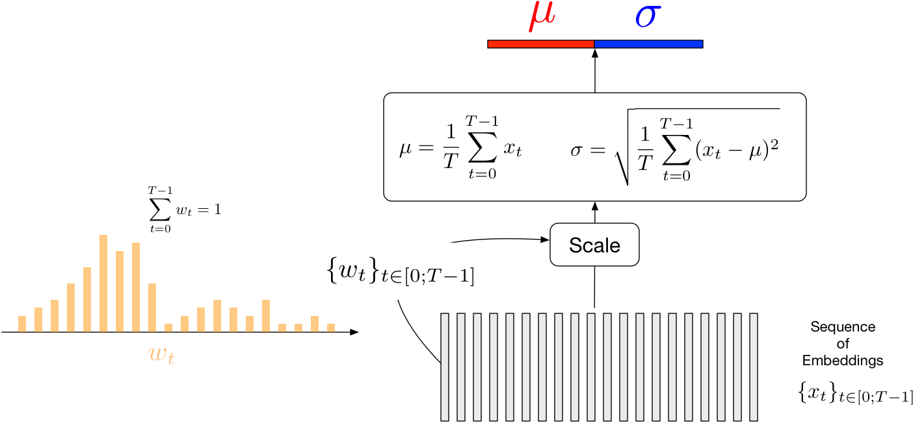
Attentive statistics pooling
On apprend des poids temporels :
\[ w_t = \frac{\exp(e_t)}{\sum_{\tau=1}^{T}\exp(e_\tau)}, \qquad \sum_{t=1}^{T}w_t=1. \]
Puis :
\[ \tilde\mu = \sum_{t=1}^{T}w_t x_t, \]
\[ \tilde\sigma = \sqrt{ \sum_{t=1}^{T}w_t x_t^{\odot 2} - \tilde\mu^{\odot 2} }. \]
Architecture attentive pooling
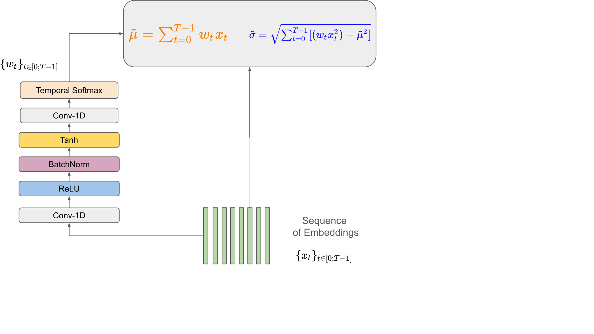
Pourquoi parler de ResNet ici ?
Dans un x-vector TDNN, on traite surtout une séquence temporelle de features :
\[ (x_1,\ldots,x_T), \qquad x_t\in\mathbb R^D. \]
Avec un ResNet speaker, on repart souvent d’une représentation temps-fréquence, par exemple un spectrogramme ou des log-mel filterbanks :
\[ X\in\mathbb R^{F\times T}. \]
On peut alors utiliser des convolutions 2D pour apprendre des motifs locaux en temps et en fréquence.
\[ \text{spectrogramme} \longrightarrow \text{ResNet} \longrightarrow \text{séquence ou carte d'activations} \longrightarrow \text{pooling} \longrightarrow \text{embedding speaker} \]
Rappel : bloc résiduel
Un bloc profond classique apprend une transformation \(F(x)\).
Un bloc résiduel apprend plutôt une correction ajoutée à l’entrée :
\[ y=x+F(x). \]
Pourquoi c’est utile ?
- facilite l’entraînement de réseaux profonds ;
- permet de préserver l’information utile ;
- chaque bloc peut raffiner la représentation plutôt que tout reconstruire.
En speaker recognition
Le ResNet apprend des motifs spectro-temporels robustes : formants, zones harmoniques, transitions, énergie, bruit de canal.
r-vector : changement d’encodeur
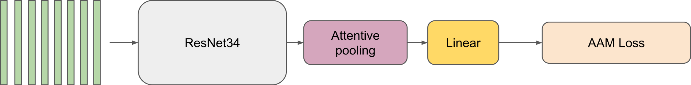
Lecture du r-vector
Entrée
Au lieu de considérer seulement une séquence de vecteurs acoustiques, le réseau exploite une carte temps-fréquence :
\[ X\in\mathbb R^{F\times T}. \]
Encodeur
Un ResNet transforme cette carte en représentations haut-niveau :
\[ X \longmapsto H_1,H_2,\ldots \]
puis un pooling attentif produit un embedding fixe.
Scoring
Une fois l’embedding extrait, on peut utiliser un score cosinus :
\[ s(e,t)=\cos(z_e,z_t). \]
Training
L’objectif à marge angulaire, par exemple AAM-Softmax, sera détaillé au CM3.
Ici, il sert à rendre les clusters de locuteurs plus compacts et mieux séparés.
Résultats r-vector
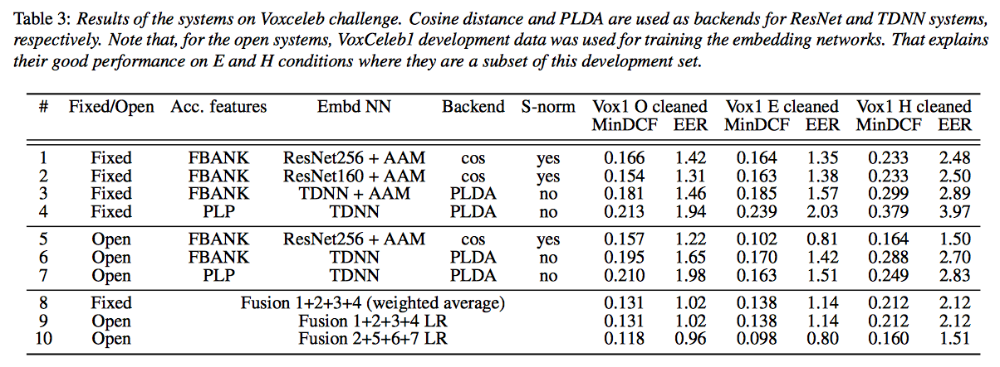
À observer : les systèmes ResNet utilisent ici un backend cosinus, tandis que les TDNN historiques utilisent souvent PLDA.
5. ECAPA-TDNN
Pourquoi encore améliorer x-vector / r-vector ?
Que veut-on améliorer dans un extracteur speaker moderne ?
- mieux modéliser plusieurs échelles temporelles ;
- renforcer dynamiquement les canaux utiles ;
- ne pas jeter les représentations intermédiaires du réseau ;
- donner au pooling une représentation plus riche de l’utterance.
ECAPA-TDNN : idée générale
ECAPA signifie :
Emphasized Channel Attention, Propagation and Aggregation.
L’architecture garde la recette x-vector :
\[ \text{frames} \longrightarrow \text{encodeur frame-level} \longrightarrow \text{pooling} \longrightarrow \text{embedding}. \]
Mais elle remplace l’encodeur TDNN simple par une chaîne plus riche :
\[ \boxed{\text{TDNN}} \quad\rightarrow\quad \boxed{\text{SE-Res2Blocks}} \quad\rightarrow\quad \boxed{\text{MFA}} \quad\rightarrow\quad \boxed{\text{attentive pooling}}. \]
ECAPA-TDNN : architecture complète
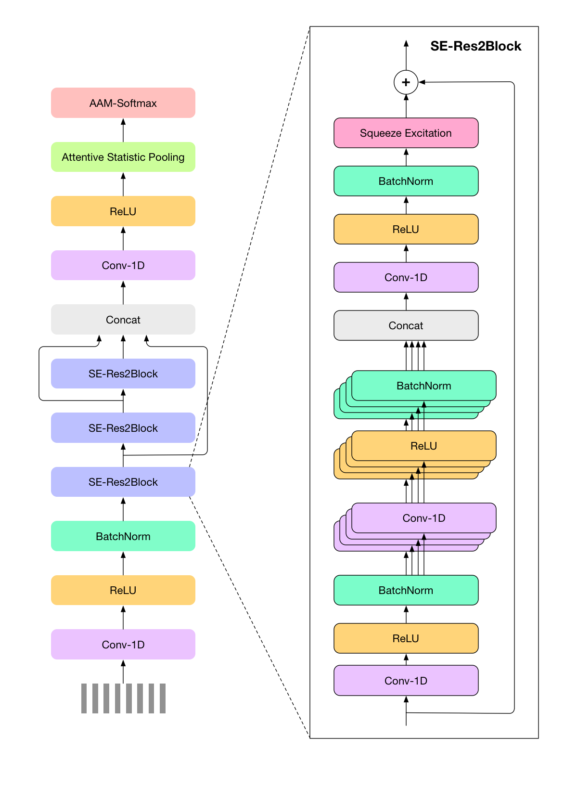
Notation unique pour lire le schéma
On note l’entrée frame-level :
\[ X\in\mathbb R^{T\times F}, \]
où :
- \(T\) = nombre de frames ;
- \(F\) = dimension acoustique par frame.
Après la première convolution temporelle :
\[ U_0 = \mathrm{Conv1D}(X), \qquad U_0\in\mathbb R^{T\times C}. \]
Puis ECAPA applique trois blocs principaux :
\[ U_1=B_1(U_0), \qquad U_2=B_2(U_1), \qquad U_3=B_3(U_2). \]
Chaque \(B_i\) est un SE-Res2Block.
Les objets importants
À ce stade :
\[ U_1,U_2,U_3\in\mathbb R^{T\times C}. \]
Pour une frame \(t\) :
\[ u_{1,t},u_{2,t},u_{3,t}\in\mathbb R^C. \]
Interprétation : \(U_1\), \(U_2\) et \(U_3\) sont trois représentations frame-level du même utterance, mais obtenues à différentes profondeurs du réseau.
On peut donc les voir comme :
\[ \boxed{U_1:\text{ première représentation}} \quad \boxed{U_2:\text{ représentation plus profonde}} \quad \boxed{U_3:\text{ représentation encore plus profonde}}. \]
Où est le MFA dans le schéma ?
Le MFA correspond au bloc gris Concat situé au-dessus des trois SE-Res2Blocks, puis à la convolution \(1\times1\) qui suit.
Le MFA n’est pas à l’intérieur d’un SE-Res2Block.
Il agrège les sorties de plusieurs blocs avant le pooling.
MFA : écriture frame par frame
Pour chaque frame \(t\), on concatène les sorties des trois blocs :
\[ u_{\mathrm{cat},t} = \begin{bmatrix} u_{1,t}\\ u_{2,t}\\ u_{3,t}\end{bmatrix} \in\mathbb R^{3C}. \]
Sur toute la séquence :
\[ U_{\mathrm{cat}} = [U_1;U_2;U_3] \in \mathbb R^{T\times 3C}. \]
Puis la convolution \(1\times1\) mélange les canaux concaténés :
\[ V = \mathrm{Conv}_{1\times1}(U_{\mathrm{cat}}), \qquad V\in\mathbb R^{T\times C'}. \]
Dans l’architecture ECAPA classique, \(C'\) vaut souvent \(1536\).
Pourquoi faire du MFA ?
Un x-vector classique utilise surtout la représentation frame-level finale avant pooling.
ECAPA utilise :
\[ U_1,\quad U_2,\quad U_3 \]
avant le pooling.
Sans MFA
\[ U_3\longrightarrow\text{pooling} \]
On ne donne au pooling que la représentation la plus profonde.
Avec MFA
\[ [U_1;U_2;U_3]\longrightarrow\text{pooling} \]
Le pooling reçoit plusieurs niveaux d’abstraction.
Les trois mécanismes ne sont pas au même endroit
Il faut distinguer trois idées :
Dans un bloc
- Res2Net : plusieurs échelles temporelles ;
- Squeeze-and-Excitation : attention de canal ;
- connexion résiduelle.
Entre les blocs et le pooling
- MFA : concaténation de \(U_1,U_2,U_3\) ;
- convolution \(1\times1\) ;
- représentation enrichie \(V\) donnée au pooling.
\[ \boxed{ \text{Res2Net et SE : dans } B_i } \qquad \boxed{ \text{MFA : après } B_1,B_2,B_3 } \]
Un SE-Res2Block : vue globale
Chaque bloc \(B_i\) prend une séquence
\[ U_{i-1}\in\mathbb R^{T\times C} \]
et renvoie
\[ U_i\in\mathbb R^{T\times C}. \]
Schématiquement :
\[ U_i = U_{i-1} + \mathrm{SE}\!\left( \mathrm{Res2Net}(U_{i-1}) \right). \]
Lecture : le bloc apprend une correction multi-échelle et pondérée par canal, puis l’ajoute à l’entrée par une connexion résiduelle.
Res2Net : pourquoi « multi-échelle » ?
Dans un bloc Res2Net, les canaux sont séparés en groupes :
\[ U=[X_1,X_2,\ldots,X_S]. \]
Chaque groupe passe par un chemin légèrement différent :
\[ Y_1=X_1, \]
\[ Y_2=K_2(X_2), \]
\[ Y_s=K_s(X_s+Y_{s-1}),\qquad s\ge 3. \]
Puis :
\[ Y=[Y_1,Y_2,\ldots,Y_S]. \]
Pourquoi le multi-échelle est utile pour le speaker ?
Indices locaux
Certaines informations de locuteur apparaissent sur des durées courtes :
- forme spectrale instantanée ;
- phonation ;
- transitions locales.
Indices plus longs
D’autres nécessitent davantage de contexte :
- dynamique prosodique ;
- coarticulation ;
- patterns temporels plus stables.
\[ \boxed{\text{Res2Net} \Rightarrow \text{plusieurs contextes temporels dans un même bloc}} \]
Squeeze-and-Excitation : idée
Après la partie Res2Net, on possède une activation
\[ U=[u_{t,c}]\in\mathbb R^{T\times C}. \]
Tous les canaux ne sont pas nécessairement aussi utiles pour un utterance donné.
Le bloc SE effectue :
\[ \boxed{\text{squeeze}} \quad\longrightarrow\quad \boxed{\text{excitation}} \quad\longrightarrow\quad \boxed{\text{reweighting}}. \]
Comment le réseau peut-il décider quels canaux mettre en avant ?
Squeeze : résumer chaque canal sur le temps
Pour chaque canal \(c\), on calcule un résumé temporel global :
\[ z_c = \frac{1}{T} \sum_{t=1}^{T}u_{t,c}. \]
On obtient :
\[ z=[z_1,\ldots,z_C]^\top\in\mathbb R^C. \]
Avant
\[ U\in\mathbb R^{T\times C} \]
une séquence d’activations.
Après squeeze
\[ z\in\mathbb R^C \]
un résumé global de chaque canal.
Excitation : produire un gain par canal
Le résumé \(z\) passe dans un petit réseau :
\[ a = \sigma\!\left( W_2\,\mathrm{ReLU}(W_1 z+b_1)+b_2 \right), \]
avec
\[ a=[a_1,\ldots,a_C]^\top, \qquad 0<a_c<1. \]
Puis chaque canal est recalibré :
\[ \widetilde u_{t,c} = a_c\,u_{t,c}. \]
Attention dans ECAPA : deux endroits différents
Le mot « attention » apparaît à deux niveaux dans ECAPA-TDNN.
1. Dans les SE-Res2Blocks
\[ U=[u_{t,c}]\in\mathbb R^{T\times C} \]
Le bloc SE produit un gain par canal :
\[ \widetilde u_{t,c}=a_c u_{t,c}. \]
C’est une attention sur les canaux.
2. Au moment du pooling
Après MFA :
\[ V=[v_{t,c}]\in\mathbb R^{T\times C'} \]
Le pooling produit des poids :
\[ \alpha_{t,c}. \]
C’est une attention temporelle dépendante du canal.
Que signifie « channel attention » dans le bloc SE ?
Un canal correspond-il directement à « pitch », « timbre », « formant », etc. ?
Pas nécessairement.
Les canaux sont des features latentes apprises par le réseau.
Le bloc SE apprend que, pour un utterance donné, certaines dimensions internes doivent être renforcées et d’autres atténuées.
\[ \boxed{\text{SE} = \text{repondération de canaux dépendante de l'utterance}} \]
Le pooling reçoit la représentation MFA
Après MFA, le pooling ne travaille pas sur \(U_3\) seul.
Il reçoit la séquence enrichie
\[ V=[v_{t,c}] \in \mathbb R^{T\times C'}, \]
où :
- \(t\in\{1,\ldots,T\}\) indexe les frames ;
- \(c\in\{1,\ldots,C'\}\) indexe les canaux latents ;
- \(v_t\in\mathbb R^{C'}\) est la représentation de la frame \(t\).
Rappel : statistics pooling uniforme
Le x-vector classique utilise un pooling uniforme.
Pour chaque canal \(c\) :
\[ \mu_c = \frac1T\sum_{t=1}^{T} v_{t,c}, \]
\[ \sigma_c = \sqrt{ \frac1T\sum_{t=1}^{T}(v_{t,c}-\mu_c)^2 }. \]
Chaque frame contribue donc avec le même poids :
\[ \frac1T. \]
Rappel : attentive statistics pooling des r-vectors
Dans les r-vectors, on a déjà introduit l’idée : apprendre un poids temporel.
Schématiquement :
\[ e_t=f(v_t), \qquad w_t= \frac{\exp(e_t)}{\sum_{\tau}\exp(e_\tau)}. \]
Puis :
\[ \widetilde\mu = \sum_t w_t v_t, \qquad \widetilde\sigma = \sqrt{ \sum_t w_t v_t^{\odot 2} - \widetilde\mu^{\odot 2} }. \]
ECAPA : le pooling attentif est enrichi
ECAPA garde le même principe général :
\[ \text{attention} + \text{moyenne/écart-type pondérés}. \]
Mais il ajoute deux raffinements.
Channel-dependent
Le poids dépend de la frame et du canal :
\[ \alpha_{t,c}. \]
On obtient donc une distribution temporelle différente pour chaque canal latent.
Context-dependent
Le score d’attention n’est pas calculé à partir de \(v_t\) seul.
Il utilise aussi un résumé global de l’utterance.
Étape 1 — calculer le contexte global
Avant de produire les poids d’attention, ECAPA calcule d’abord des statistiques globales non pondérées de l’utterance.
\[ \mu_V = \frac1T\sum_{t=1}^{T} v_t \in\mathbb R^{C'}, \]
\[ \sigma_V = \sqrt{ \frac1T\sum_{t=1}^{T}(v_t-\mu_V)^{\odot 2} } \in\mathbb R^{C'}. \]
Ces deux vecteurs résument le contexte global de l’utterance.
Étape 2 — enrichir chaque frame par le contexte
Pour chaque frame \(t\), on construit une entrée pour le réseau d’attention :
\[ q_t = [v_t;\mu_V;\sigma_V] \in \mathbb R^{3C'}. \]
Le vecteur \(q_t\) contient donc :
- l’information locale de la frame \(t\) : \(v_t\) ;
- la moyenne globale de l’utterance : \(\mu_V\) ;
- la variabilité globale de l’utterance : \(\sigma_V\).
Étape 3 — produire les scores d’attention
Le petit réseau d’attention reçoit \(q_t\) et produit un score pour chaque canal :
\[ e_{t,c} = f_c(q_t). \]
On peut lire cela comme :
\[ \boxed{ \text{frame locale }v_t + \text{contexte global }(\mu_V,\sigma_V) \longrightarrow \text{score d'attention }e_{t,c} } \]
Le score \(e_{t,c}\) dit à quel point la frame \(t\) est informative pour le canal \(c\).
Étape 4 — softmax temporel par canal
Pour chaque canal \(c\), on normalise les scores sur le temps :
\[ \alpha_{t,c} = \frac{\exp(e_{t,c})} {\sum_{\tau=1}^{T}\exp(e_{\tau,c})}. \]
Donc, pour chaque canal :
\[ \sum_{t=1}^{T}\alpha_{t,c}=1. \]
Exemple : une attention différente selon le canal
Supposons trois frames et deux canaux.
\[ \alpha = \begin{bmatrix} 0.8 & 0.1\\ 0.1 & 0.2\\ 0.1 & 0.7 \end{bmatrix}. \]
Pour le canal 1 :
\[ (0.8,0.1,0.1), \]
la première frame domine.
Pour le canal 2 :
\[ (0.1,0.2,0.7), \]
la troisième frame domine.
Étape 5 — calculer les statistiques pondérées finales
Une fois les poids \(\alpha_{t,c}\) calculés, ECAPA calcule les statistiques finales.
Pour chaque canal \(c\) :
\[ \widetilde\mu_c = \sum_{t=1}^{T}\alpha_{t,c}v_{t,c}, \]
\[ \widetilde\sigma_c = \sqrt{ \sum_{t=1}^{T}\alpha_{t,c}v_{t,c}^2 - \widetilde\mu_c^2 }. \]
Le pooling produit alors :
\[ \boxed{ p=[\widetilde\mu;\widetilde\sigma] } \]
Ce vecteur \(p\) est ensuite projeté vers l’embedding de locuteur.
Où intervient exactement le « context-dependent » ?
Le « context-dependent » n’est pas une étape après \(p\).
Il intervient avant, au moment où l’on calcule les scores d’attention :
\[ V \longrightarrow (\mu_V,\sigma_V) \longrightarrow q_t=[v_t;\mu_V;\sigma_V] \longrightarrow e_{t,c} \longrightarrow \alpha_{t,c} \longrightarrow p. \]
Une fois que \(p=[\widetilde\mu;\widetilde\sigma]\) est calculé, le pooling est terminé.
Résumé des attentions ECAPA
\[ X \longrightarrow \underbrace{\text{SE-Res2Blocks}}_{ \substack{\text{attention sur les canaux}}} \longrightarrow \underbrace{\text{MFA}}_{\text{concaténation multi-couches}} \longrightarrow V. \]
Puis :
\[ V \longrightarrow \underbrace{\alpha_{t,c}}_{ \substack{\text{attention temporelle}\\\text{dépendante du canal}\\\text{et du contexte global}}} \longrightarrow [\widetilde\mu,\widetilde\sigma] \longrightarrow \text{embedding}. \]
Le pooling ECAPA apprend donc où écouter dans le temps, mais cette décision est différente pour chaque canal latent.
Relire maintenant l’architecture ECAPA
On peut maintenant identifier :
- les SE-Res2Blocks : Res2Net + Squeeze-and-Excitation + résidu ;
- les flèches qui remontent vers Concat : sorties \(U_1,U_2,U_3\) ;
- MFA :
Concat+Conv-1Djuste avant le pooling ; - le channel-dependent attentive statistics pooling ;
- la projection finale vers l’embedding.
Résumé du flux ECAPA
\[ X \longrightarrow U_0 \longrightarrow \begin{cases} U_1=B_1(U_0),\\ U_2=B_2(U_1),\\ U_3=B_3(U_2) \end{cases} \]
\[ (U_1,U_2,U_3) \xrightarrow{\text{MFA}} V \xrightarrow{\text{attentive pooling}} \text{embedding}. \]
Le rôle du MFA est donc de transformer plusieurs représentations frame-level intermédiaires en une représentation enrichie \(V\) donnée au pooling.
Résultats ECAPA-TDNN
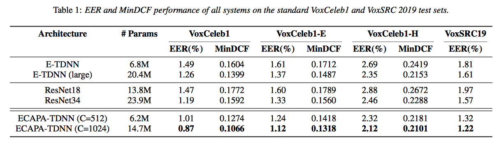
À observer : ECAPA améliore fortement E-TDNN et ResNet avec une taille de modèle qui reste raisonnable.
Ce qu’il faut retenir d’ECAPA
Multi-échelle
Res2Net / contextes temporels
Channel attention
Squeeze-and-Excitation
Agrégation
Multi-layer Feature Aggregation
\[ \boxed{ \text{ECAPA} = \text{SE-Res2Blocks} + \text{MFA} + \text{attentive statistics pooling} } \]
6. Synthèse
La recette moderne
\[ \boxed{\text{features ou waveform}} \rightarrow \boxed{\text{frame encoder}} \rightarrow \boxed{\text{temporal aggregation}} \rightarrow \boxed{\text{speaker embedding}} \rightarrow \boxed{\text{score}}. \]
CM2
Quelle architecture produit \(z\) ?
- i-vector ;
- x-vector ;
- r-vector ;
- ECAPA-TDNN.
CM3
Comment apprendre une bonne géométrie pour \(z\) ?
- softmax ;
- normalisation ;
- marges ;
- AAM-Softmax ;
- pertes métriques.
Question finale
Si deux systèmes ont la même architecture mais des losses différentes, auront-ils nécessairement la même géométrie d’embedding ?
Non. L’architecture définit comment calculer \(z\), mais la loss définit fortement la géométrie apprise dans l’espace latent.
C’est le sujet du CM3.
Take-home messages
- Un speaker embedding transforme une séquence de durée variable en un vecteur fixe.
- L’i-vector est une représentation probabiliste compacte, historiquement centrale.
- Le x-vector apprend directement un embedding par classification supervisée des speakers.
- Le statistics pooling est le passage clé frame-level → segment-level.
- Les r-vectors et ECAPA améliorent surtout l’encodeur et le pooling.
- La prochaine question est : quelle loss impose la bonne géométrie ?
Comment lire les triplets \([C,K,D]\) ?
Dans cette figure, une couche notée
\[ \text{Conv1D}[C,K,D] \]
se lit comme :
\[ \boxed{ C=\text{nombre de canaux de sortie}, \quad K=\text{taille du noyau}, \quad D=\text{dilatation} } \]
Exemple TDNN
\[ \text{Conv1D}[512,5,1] \]
produit, à chaque instant \(t\), une représentation
\[ x_t\in\mathbb R^{512} \]
avec un noyau temporel de 5 frames.
Exemple SincNet
\[ \text{SincNet}[80,251,1] \]
signifie : \(80\) filtres appliqués au waveform. À chaque position temporelle, chaque filtre regarde une fenêtre locale de \(251\) échantillons et produit une réponse.